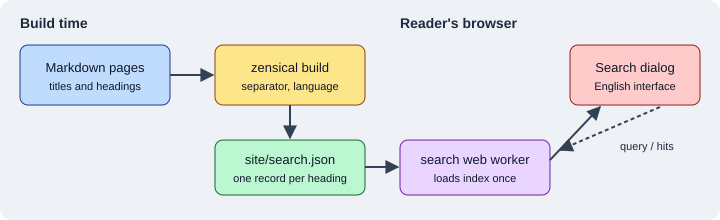

Search
|
This content was generated with the assistance of AI and should be verified against the official documentation before being relied on in production. |
This page was written against Zensical 0.0.72 (published 2026-10-23, the current PyPI release on 2026-10-26, still labelled alpha) and checked on 2026-10-26. Zensical ships its own search engine, written from scratch by the Zensical team, and it works without any third-party service: the index is a file produced by the build and the query runs in the reader’s browser. This page explains the moving parts, the few settings that exist, how to keep pages and sections out of the index, and what "English only" means for the search interface. The running example is the documentation site of Pocket Units, the small units-conversion library, and every build shown below was run with Zensical 0.0.72 in a scratch project.
What the built-in search is
Search is enabled by default; you do not list a plugin or install anything. Three properties follow from the design:
-
It is client-side. A build writes a single
search.jsonfile at the root of the output directory, and a web worker script (assets/javascripts/workers/search.<hash>.min.js) loads it in the browser and answers queries. No server, crawler or API key is involved, which also avoids sending reader queries to a third party. -
It works offline. The compatibility notes list an
offlineplugin (since 0.0.3,enabled = trueby default) that makes the site searchable when the files are opened directly from the file system, so a built site can be shipped as a download. -
It is not the MkDocs engine. Zensical does not load the search implementation of MkDocs or Material for MkDocs and does not use the Lunr pipeline. A
searchormaterial/searchentry in amkdocs.ymlthat Zensical reads configures the built-in module.
According to the Zensical documentation the engine is new and still changing; the team says it intends to release it as a standalone open source project in 2026. Treat its behaviour as alpha-quality: details such as the default separator can change between 0.0.x releases.

The figure shows the two phases: the build converts each page and heading into index records, and the reader’s browser downloads the file once and searches it locally.
What ends up in the index
Each page produces one record for its title and one record per heading below it. A record has a location (page URL
plus heading anchor), a level, a title, the rendered text of the section as HTML, the navigation path and the
tags of the page. The top of the file also stores the effective config: the search languages and the separator.
Building the Pocket Units site with an API page produced by mkdocstrings-python gave this shape (long texts shortened
here with an ellipsis; the first lines are the real keys and values):
{
"config": {
"lang": ["en"],
"separator": "[\\s\\-_,:!=\\[\\]()\\\\\"`/]+|\\.(?!\\d)"
},
"items": [
{"location": "", "level": 1, "title": "Pocket Units", "text": "<p>Convert lengths. See API.</p>", "path": ["Home"], "tags": []},
{"location": "api/#pocket_units.convert", "level": 2, "title": "<code>convert(value, from_unit, to_unit)</code>", "text": "<p>Convert a length between two units.</p> ...", "path": ["API"], "tags": []},
{"location": "guide/#public-section", "level": 2, "title": "Public section", "text": "<p>The kilometre conversion factor is exact.</p>", "path": ["Guide"], "tags": []}
]
}Source: Zensical docs: Search
The two consequences worth remembering are that headings are the unit of search (a long page with many headings gives
precise result links) and that generated API headings, such as the convert(value, from_unit, to_unit) entry above, are
searchable too. See API Docs with mkdocstrings.
Pages listed in not_in_nav are built, searchable and in the sitemap; see
Configuration.
Settings
The built-in module exposes two plugin settings. Everything else a MkDocs or Material for MkDocs configuration may contain is either replaced by another setting or ignored.
| Setting | Default | Meaning |
|---|---|---|
|
|
Turns search on or off for the whole build. |
|
built-in pattern |
JavaScript regular expression that splits text into search terms (whitespace and punctuation). |
The compatibility notes add that enabled and separator are the only plugin settings that affect Zensical search:
lang is ignored (the language comes from theme.language, see below), pipeline has no equivalent, and fields,
indexing, jieba_dict, jieba_dict_user, min_search_length and prebuild_index are ignored too.
Disabling search
[project]
site_name = "Pocket Units"
[project.plugins.search]
enabled = falseSource: Zensical docs: Search
With this configuration the build still succeeds. In the scratch project the search box was no longer rendered in the
header of the pages, and search.json was still written, but with an empty items list (93 bytes). Equivalent
mkdocs.yml form: a plugins list containing search with enabled: false.
Changing the separator
The separator decides where a text is cut into terms. The default (shown in the index file above) splits at whitespace
and at - _ , : ! = [ ] ( ) \ " ` / and at a dot that is not followed by a digit, which keeps version numbers like
0.0.72 together while splitting pocket_units.convert. The example below drops the dot rule, so a dotted
name such as a.b is no longer split into two terms:
[project]
site_name = "Pocket Units"
[project.plugins.search]
enabled = true
separator = '[\s\-_,:!=\[\]()"`/]+'Source: Zensical compatibility: plugins
The TOML literal string (single quotes) avoids doubling the backslashes. A build with this file wrote the new value
into the index, with the lang entry unchanged:
{"lang": ["en"], "separator": "[\\s\\-_,:!=\\[\\]()\"`/]+"}Whether a different separator gives better results for a given site was not measured here; the build confirms only that the setting is passed to the browser.
Search language and the English-only interface
The search language is derived from the site language. Set theme.language and not the old lang option of the
MkDocs search plugin:
[project.theme]
language = "en"Source: Zensical docs: Search
The index file records it: with the language set to English the configuration listed the language code en, and with German it listed de. The documentation states that the support for several languages in the index is not affected by the interface limitation described next (it says multi-lingual search is not impacted).
The documentation also states that the search interface is currently only available in English. The search dialog is an entirely new implementation, so the localisation of Material for MkDocs, which was tied to the old engine, was not carried over while the new one is still changing. The rest of the theme is localised into more than 60 languages (see Versioning and i18n). One observation from 0.0.72 that the documentation does not explain: in a scratch build with the language set to German the page’s embedded translation table still contained German strings for the search result keys (for example the text for no matches). Whether the search dialog displays them was not checked in a browser, so rely on the documented statement and test the language you need.
Highlighting search terms
With the search.highlight feature, a click on a result highlights every occurrence of the searched terms on the target
page after the link is followed. It is a theme feature, set in the features list:
[project.theme]
features = [
"search.highlight",
]Source: Zensical docs: Search
In the scratch build the page configuration block listed the feature search.highlight. The visual effect was not tested in a browser. The Search page of the documentation lists no other search feature flag, so options known from Material for MkDocs such as search suggestions or shareable search links should not be assumed to work; check the documentation of your Zensical version before using them.
Excluding content from search
Three levels of exclusion exist. Hidden content is not secret: it is only left out of the index, and the page itself
is still published (unless you also exclude it from the build with exclude_docs or draft_docs).
A whole page
Add search.exclude to the front matter:
---
search:
exclude: true
---
# Internal
Narwhal secret roadmap text.Source: Zensical docs: Search
A section or a block
When the Attribute Lists extension is on (it was in the scratch project, which used the default Markdown extensions),
add the data-search-exclude pragma after a heading or after a block:
# Guide
Convert a length between meters and feet.
## Public section
The kilometre conversion factor is exact.
## Maintainer notes { data-search-exclude }
Zebrafish internal-only note about release checklists.
This paragraph is excluded too.
{ data-search-exclude }Source: Zensical docs: Search
Building the Guide page together with the Internal page above and then searching the generated search.json for the
two marker words, "Narwhal" and "Zebrafish", found neither. The index held the Guide page and its Public section
heading but no record for Maintainer notes, and no record for the Internal page. The marker words are made-up test
strings and appear nowhere else in the project.
Pitfalls and version notes
-
The search settings changed shape while Zensical was 0.0.x. Pin the version (
pip install zensical==0.0.72) and re-read the Search page of the documentation after an upgrade. The 0.1.0 release line is planned for 2026-11-05. -
The module is built in; do not try to install a Lunr, Algolia or Pagefind integration through
plugins. Plugin entries Zensical does not know are silently ignored (see Blog, Tags and Plugins), which can look like a working configuration that does nothing. -
An existing
mkdocs.ymlcan keep itssearchentry, but onlyenabledandseparatorhave an effect; the other options listed under Settings are ignored. This is part of the checklist in Migrating from Material for MkDocs. -
After an upgrade or a surprising result, rebuild with
zensical build --cleanso that cached output does not mask a change in the index. -
Publish the whole output directory (
siteby default): the browser needssearch.jsonand the worker script next to the pages.
For comparison with other tools in this section, Antora offers search through an extension described in Site Search, and Docusaurus through themes and plugins described in Search.